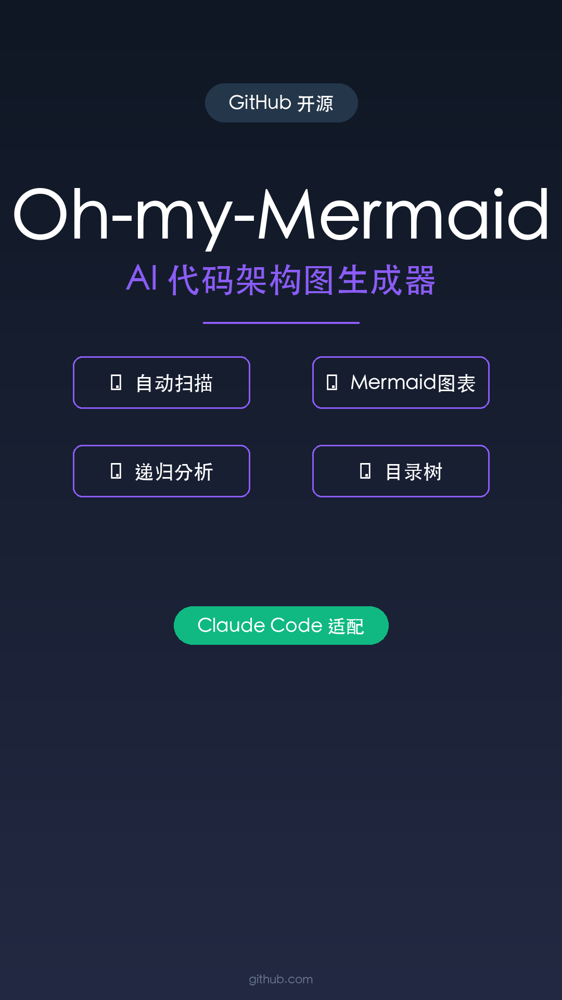

Claude Code 一键配置，省事 100 倍

项目越做越大，架构越来越复杂，用 AI 开发的项目越来越大，想回头看自己的代码库，架构是什么样的、数据怎么流转的，反而越来越模糊。
手动画架构图费时费力，而且代码更新后图表就过时了。
今天给大家推荐一款神器：Oh-my-Mermaid。
它能让 AI 自动扫描代码库，生成可视化的架构文档。
一条命令自动配置，还能把文档同步到云端分享给团队。
如果你的项目已经大到自己都记不清架构了，用它扫一遍，比手动画图省事 100 倍。
比你手动画图省事 100 倍